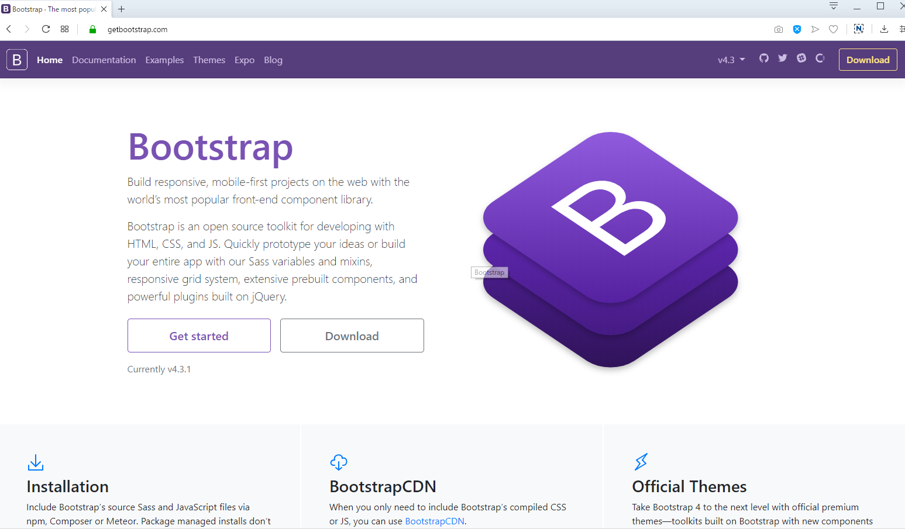
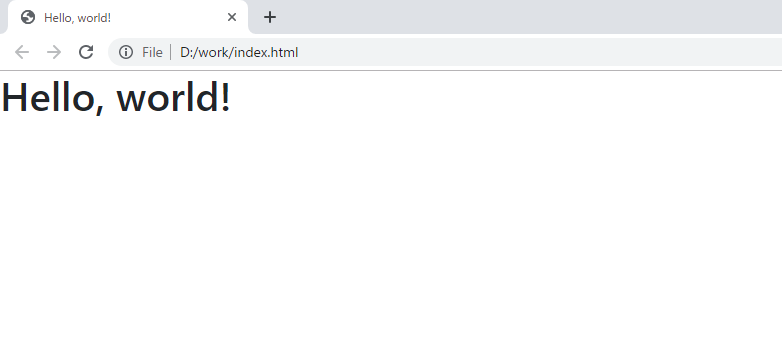

[Bootstrap] HTMLデザインのフレームワークのBootstrap紹介
こんにちは。明月です。
この投稿はBootstrapライブラリに関する説明です。
10年前か15年前だけでもWebサービスのプロジェクトをする時にチーム構成はPM(プロジェクトマネージャー)、デザイナー、開発者で作業しました。
開発者がHTMLの基本標準オブジェクトでプログラムデザインをできないことではないですが、基本オブジェクトで作成すればプログラムが何か足りない感じがたくさんあります。その時にはHTML 5の標準を発表する前なのでCSSデザインすることも限界がありました。なのでウェブデザイナーがPhotoshopツールでデザイン作業後のイメージを割ってウェブデザインしたと覚えがあります。
今の状況で考えたら、そのイメージファイルのトラフィックをどのように処理したか疑問です。とにかくその時の後にHTML 5が発表してCSS 3.0が出現しました。イメージを割ってWebページ作ることがだんだんなくなって、CSSでデザイン作業することになりました。その時もCSSの作業はほぼデザイナーが任せて作業しました。
人によって違うと思いますが私の場合はたくさん努力してもデザイナーみたいに作ることができないです。多分、デザイン感覚がないと思います。
そのため、大きいプログラムプロジェクトを運用する時にデザインと開発者の役割が出来るし、開発者は工程の概念を知りますが、デザイナーは工程の概念を知らない方も結構います。なのでプロジェクトスケジュール調整が簡単にできない時が結構あります。
例えば、ある会社のホームページのメインページを修正する時、デザインポートフォリオが作成して、デザインの承認を受けて、部分修正やイメージを割る作業してCSS作成するし...私の経験には、設計が終わって、デザイン作業が終わるまでずっと待ってた時もあります。デザインは開発と領域が違うので早めに焦ることもできないし、様々で大変だった時があります。
多分、自分の考えはこの部分の差異があるので、MVC工程のモデルが出来たと思います。時間は決めてるが、デザインの領域を抜いてControllerやDBを先に作業すること？
私の経験で10年前までの状況がそうでした。そうするうちにBootstrapライブラリを認知して初めに使ったことが約2013年ぐらいです。始めは驚きました。
デザイナーがいなくてもHtmlオブジェクトのclass設定だけで綺麗なデザインを作成することが可能し、モバイルやモニターのサイズによる反応型デザインも作成することもできます。また、テーマによってデザインスタイルも変わることもできます。
また、綺麗なデザインテンプレートを安く購入が可能し、無料のデザインテンプレートもすごく多いです。そのため、現在はデザイナーが別にいなくても開発者だけでプログラムを作成することが可能になったし、それで以前よりプログラムスケジュールを合わせることが以前よりしやすくなったし生産性も結構上がったと思います。
現在はBootstrapみたいなデザインライブラリがたくさんできたと思いますが、私はBootstrapが慣れているしコミュニティが大きいので今までずっと使っています。

それならBootstrapを紹介します。
link - Bootstrap 3.x バージョン https://getbootstrap.com/docs/3.4/
link - Bootstrap 4.x バージョン https://getbootstrap.com/
Bootstrapは、2020/07/30に基づいて二つのバージョンが存在します。3.xバージョンと4.xバージョンです。
最新バージョンは4.xなので、新しいプロジェクトなら4.0バージョンで作成するほうがよいです。3.xバージョンがある理由は、3.xから4.xにバージョンアップした時に、IEのサポートする可否、3.xからdeprecatedされた関数(使用禁止)が多いため、3.Xから4.Xに修正するとエラー発生することが多いです。
もし、プロジェクトでIE8とIOS6の支援が必要なら3.xを使うほうが良いです。
<!doctype html>
<html>
<head>
<!-- タグ設定 -->
<meta charset="utf-8">
<!-- モバイルタグ設定 -->
<meta name="viewport" content="width=device-width, initial-scale=1, shrink-to-fit=no">
<!-- Bootstrap CSS CDN設定-->
<link rel="stylesheet" href="https://stackpath.bootstrapcdn.com/bootstrap/4.3.1/css/bootstrap.min.css" integrity="sha384-ggOyR0iXCbMQv3Xipma34MD+dH/1fQ784/j6cY/iJTQUOhcWr7x9JvoRxT2MZw1T" crossorigin="anonymous">
<!-- タイトルタグ -->
<title>Hello, world!</title>
</head>
<body>
<h1>Hello, world!</h1>
<!-- BootstrapはJqueryライブライを使うのでCDN設定する。 -->
<script src="https://code.jquery.com/jquery-3.3.1.slim.min.js" integrity="sha384-q8i/X+965DzO0rT7abK41JStQIAqVgRVzpbzo5smXKp4YfRvH+8abtTE1Pi6jizo" crossorigin="anonymous"></script>
<!-- BootstrapはPopupライブラリを使うのでCDN設定する。 -->
<script src="https://cdnjs.cloudflare.com/ajax/libs/popper.js/1.14.7/umd/popper.min.js" integrity="sha384-UO2eT0CpHqdSJQ6hJty5KVphtPhzWj9WO1clHTMGa3JDZwrnQq4sF86dIHNDz0W1" crossorigin="anonymous"></script>
<!-- BootstrapのスクリプトをCDN設定する。 -->
<script src="https://stackpath.bootstrapcdn.com/bootstrap/4.3.1/js/bootstrap.min.js" integrity="sha384-JjSmVgyd0p3pXB1rRibZUAYoIIy6OrQ6VrjIEaFf/nJGzIxFDsf4x0xIM+B07jRM" crossorigin="anonymous"></script>
</body>
</html>

上のソースは簡単にライブラリをリンク(CDN設定)して接続したものだけです。出力は単純にHello worldを描画したのでこれがBootstrapを適用したかは分からないです。
ここがBootstrapの紹介と基本設定なので次の投稿からBootstrapに関して詳しく説明します。
ここまでBootstrapライブラリに関する説明でした。
ご不明なところや間違いところがあればコメントしてください。
- [Bootstrap] HTMLデザインのフレームワークのBootstrap紹介2020/07/30 19:06:36
- [C#] Redisのデータベースを接続して使い方2022/02/15 18:46:09
- [CentOS] Redisデータベースをインストールする方法とコマンドを使い方2022/02/14 18:33:07
- [Design pattern] 3-6. ステートパターン(State pattern)2021/11/17 20:04:47
- [Design pattern] 3-5. メメントパターン(Memento pattern)2021/11/16 20:01:36
- [Design pattern] 3-4. イテレータパターン(Iterator pattern)2021/11/15 19:31:28
- [CentOS] Linux環境(CentOS)でCassandra(NoSQL DB)をインストールする方法(DBeaverブラウザでNoSQL使い方)2021/11/12 17:33:58
- [Design pattern] 3-3. コマンドパターン(Command pattern)2021/11/05 17:01:42
- [Window] apache-tomcatでロードバランシング(Load balancing)する方法とセッションクラスタリング（セッション共有）2021/11/05 16:58:45
- [Window] Apacheでmod_jkとmod_proxyの差異、apacheでtomcatのwebsocketのプロキシフォーワードする方法2021/11/05 16:55:05
- [PHP] Apache環境の同じホスト中でPHPとJava(Servlet)を同時に起動、運用する方法2021/11/05 16:52:04
- [C#] 61. ウィンドウフォーム(Window form)でスレッド(Thread)を使い方、クロススレッド問題解決2021/11/04 19:29:51
- [Design pattern] 3-2. 責任の連鎖パターン(Chain of responsibility pattern)2021/11/04 19:27:58
- [Design pattern] 3-1. ストラテジーパターン(Strategy pattern)2021/11/03 18:38:52
- [C#] 60. ウィンドウフォーム(Window form)のイベント設定する方法2021/11/02 21:18:08
- [Design pattern] 2-7. ファサードパターン(Facade pattern)2021/11/02 19:32:31